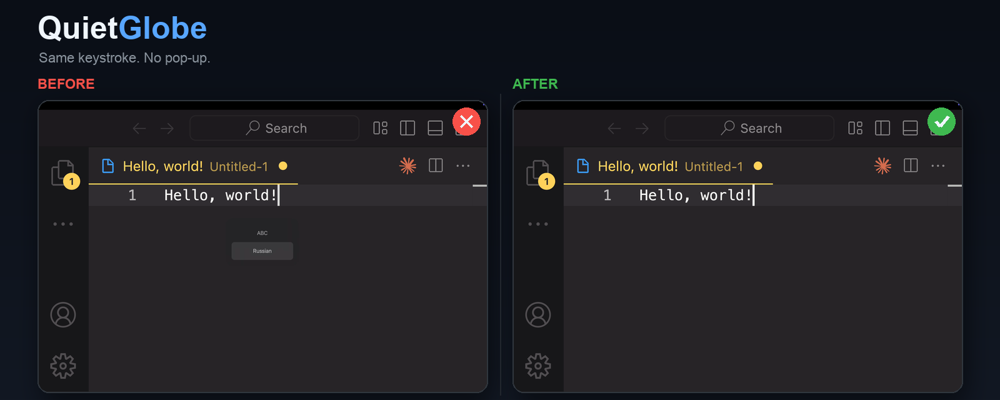
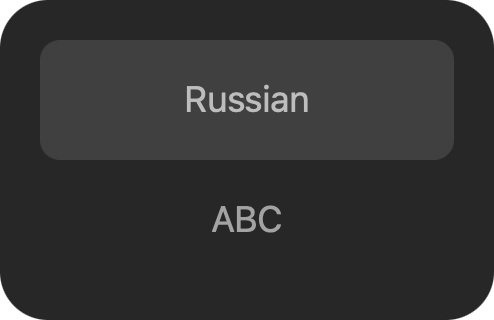
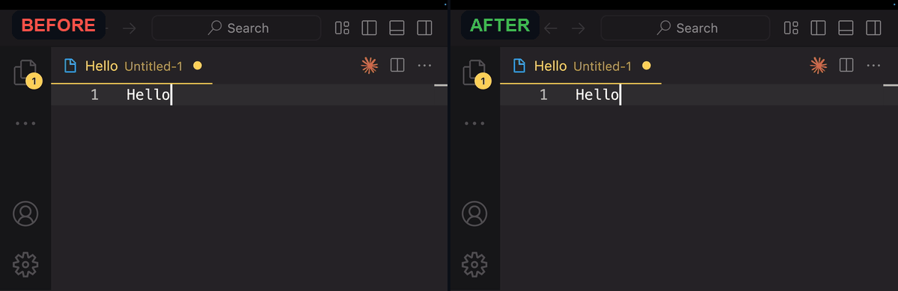

Instant
Switches input sources with the public Text Input Sources API — no animation, no HUD, no delay.
macOS utility · open source
QuietGlobe switches keyboard layouts instantly with the 🌐 Globe key and removes the input source indicator. Same key, no HUD, no delay.
brew install --cask Nishikinodzuki/quietglobe/quietglobe

When you press the 🌐 Globe key on macOS, the system shows a floating input source indicator with “ABC” / “Russian”. It covers your text, stays on screen until you type, and interrupts recordings and demos.
There is no supported macOS setting to disable it. That is why QuietGlobe exists.

Left: the standard macOS ABC/Russian popup. Right: QuietGlobe — same keystroke, instant switch, no popup.

Switches input sources with the public Text Input Sources API — no animation, no HUD, no delay.
Swift, CoreGraphics event tap, no private frameworks. The source is on GitHub under MIT.
No network, no analytics, no keystroke logging. Your typing stays on your Mac.
QuietGlobe lives in the menu bar. Click the globe to toggle interception, launch at login, open Accessibility settings, or quit.
brew install --cask Nishikinodzuki/quietglobe/quietglobeOr download the latest release and move QuietGlobe.app to /Applications.
Accessibility cannot be granted automatically by macOS. This is a system security requirement.
Install QuietGlobe, grant Accessibility permission, and keep the Globe key set to “Change Input Source”. QuietGlobe switches the layout itself and suppresses the macOS input source indicator. There is no supported macOS setting that removes this popup.
macOS shows the indicator when the input source changes via the Globe key or a keyboard shortcut. It is meant to confirm the new layout, but it often stays on screen until you type, which interrupts typing and screen recordings.
To intercept the Globe key before the system HUD appears, QuietGlobe uses a macOS event tap. macOS requires Accessibility permission for global keyboard event taps. QuietGlobe does not read, store, or send your keystrokes.
Yes. QuietGlobe is free and open source under the MIT license. There are no ads, subscriptions, or analytics.
Yes, QuietGlobe targets macOS 13 Ventura and later. It is built as a Universal 2 binary for Apple Silicon and Intel Macs.
| macOS | Status |
|---|---|
| macOS 13 Ventura | Supported |
| macOS 14 Sonoma | Supported |
| macOS 15 Sequoia | Supported |
| macOS 26 / 27 | Supported (tested on 27.2) |